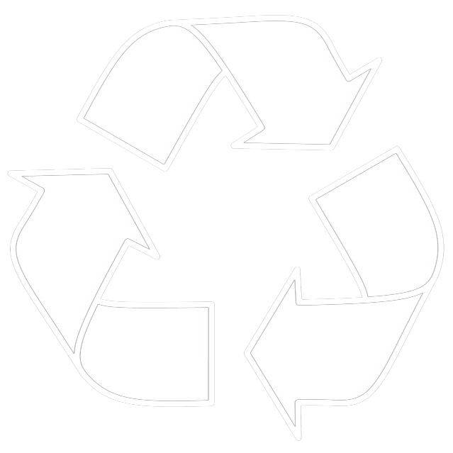

WasteManage LK → LoginYour comprehensive platform for waste collection schedules, recycling information, and environmental services across Sri Lanka
Click to access this service
Go to Report Dumping →Click to access this service
Go to Special Pickup →Click to access this service
Go to Recycling Guide →Click to access this service
Go to Recycling Centers →Click to access this service
Together we can create a cleaner, greener Sri Lanka. Proper waste segregation and recycling are key to environmental sustainability.